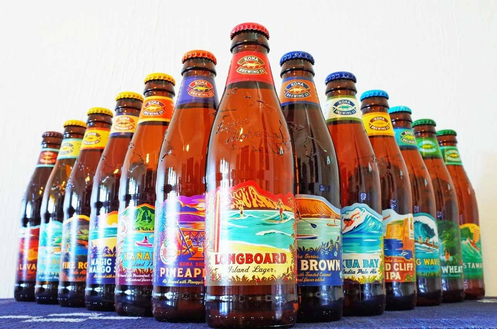
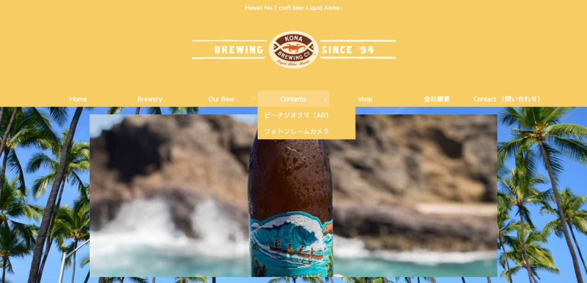
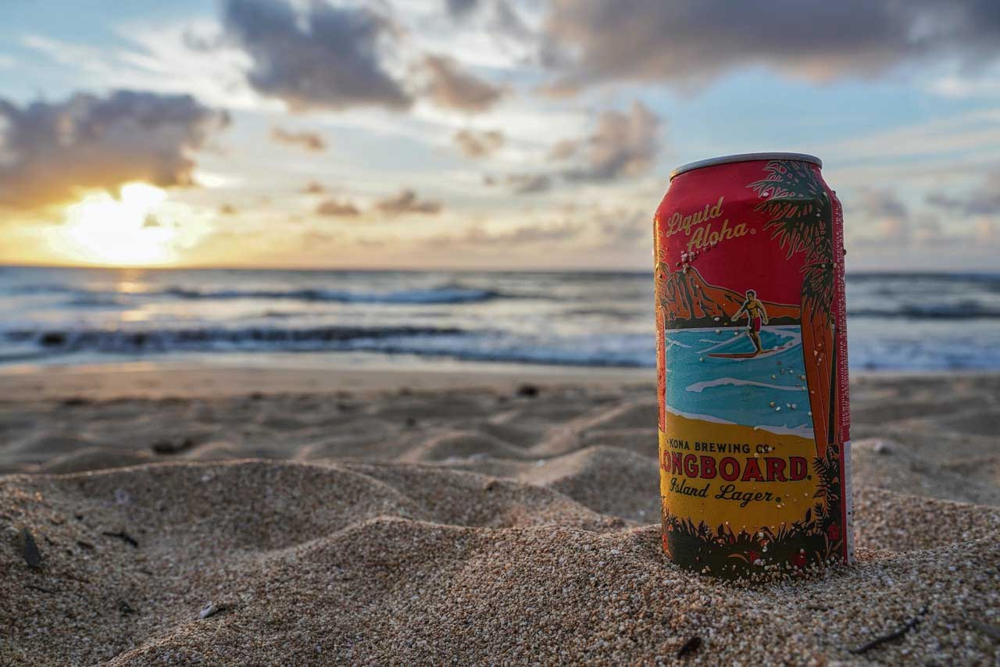

ビーチジオラマAR
コナビール ジャパン様
コナビール ジャパン様
OnePlanetでは2020年、ハワイのの人気クラフトビール「コナビール 」のARプロモーションに採択していただきました。以下にARの詳細をご紹介させていただきます。
コナビールを運営するKona Brewing Companyは、コナブルワリーとも呼ばれ、アメリカ合衆国ハワイ州ハワイ島のコナに本社があるビール会社です。 言わずと知れた、ハワイを代表するビールブランドですね。 1994年に設立され、1995年に初めてビールを出荷。現在はハワイ島カイルア・コナの町の海岸近くの工場に隣接してパブも経営しており、ハワイ島だけでなくオアフ島へも出荷しています。 ハワイへ行ったことがある方であれば、一度は飲んだことがあるのではないでしょうか。
コナビールジャパンの公式サイトに「コンテンツ」というコーナーを設置させていただき、WEBサイトからARを楽しむ導線として導入をしました。 スクリーンショット 2020-04-15 19.34.01 WEB ARのページのリンクをQRコード化すれば、WEBサイトへアクセスしなくてもダイレクトにAR体験へと到達することが可能です。 コナビールを提供しているお店や、ECサイトから購入をしてくれた顧客などに、ちょっとしたハワイ感を感じられるような体験として、ビールと一緒に楽しんでもらうことができます。
ご紹介コンテンツの内容としては、海の上に浮かぶ小さな島を3Dモデルで制作し、自宅や店舗など、どこでも好きな空間で表示させることができるAR体験として開発しました。お客様とのすり合わせの中で、「コナビール島」のようなイメージで制作しており、島にはロゴを表示させ、砂浜にはサーフボードが刺さるような演出を行いました。ぜひ以下よりお試しください。
URL：http://konabeer.jp/beach-diorama-ar/
QR Code：
ハワイに居なくても、ちょっぴりハワイ気分を感じられるようなAR体験を導入させていただきました。このような外出がしにくい状況下、自宅でハワイアンビールを飲みながら、ビールと一緒にハワイアンビーチを感じてみてはいかがでしょうか。コナビールはこちらの ECサイト からもお買い求めいただけます。
コナビール様のような、特別なアプリを必要とせずWEBベースのARを活用したマーケティングは、これから新しい消費者体験として広がっていくと考えられます。
ARを活用して多くのユーザーに使われるプロモーションがしたいとお考えの企業様がございましたら、お気軽に お問合せ くださいませ。
